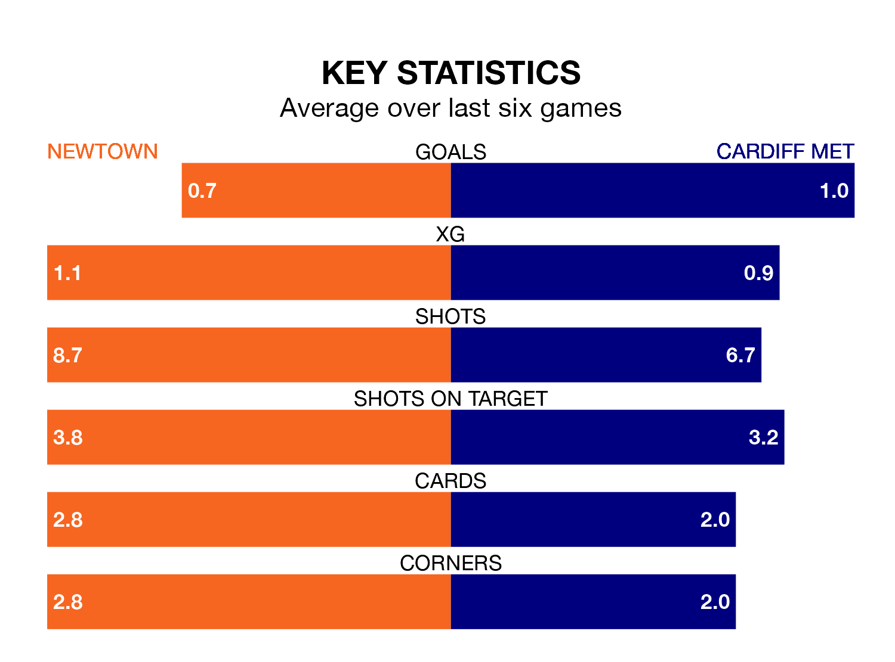

Newtown host Cardiff Met in Saturday's early match at G.F. Grigg Latham Park looking to bounce back from defeat last time out in the Welsh Premier League.
The White Stars, who sit zero in the league after 26 games, fell to a 1-0 away defeat to Caernarfon Town on March 1.
They face a Cardiff side who also lost their last match, a 4-0 defeat to The New Saints, and who sit fifth in the table.
Newtown are in awful form in the Welsh Premier League, with no wins and six losses from their last six games.
With no wins and three draws over that period, Cardiff's form is better – they have taken three points from 18, compared to the White Stars's zero.
In the last 10 years, Newtown and Cardiff have played each other on 21 occasions. Newtown won five of them, Cardiff 12, and they drew four times.
On average, the White Stars scored 1.1 goals and the Archers 1.4 in those matches.
Their last meeting was on October 17, when Cardiff won 2-1 at home.
With 32 goals in 26 games so far this season, the Archers are the league's joint-lowest scorers with 1.2 goals per game. And they are conceding more than average, letting in 48 goals at a rate of 1.8 per game.
The hosts, meanwhile, are average scorers, with 1.5 goals per game. They have conceded 1.7 goals per game.
Updated: 09:34 (UTC), 08/03/24